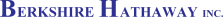
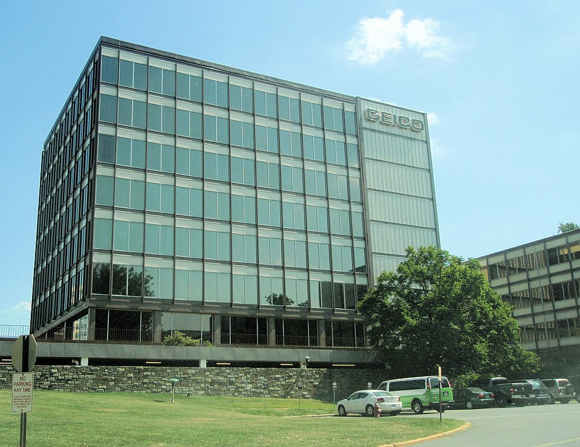
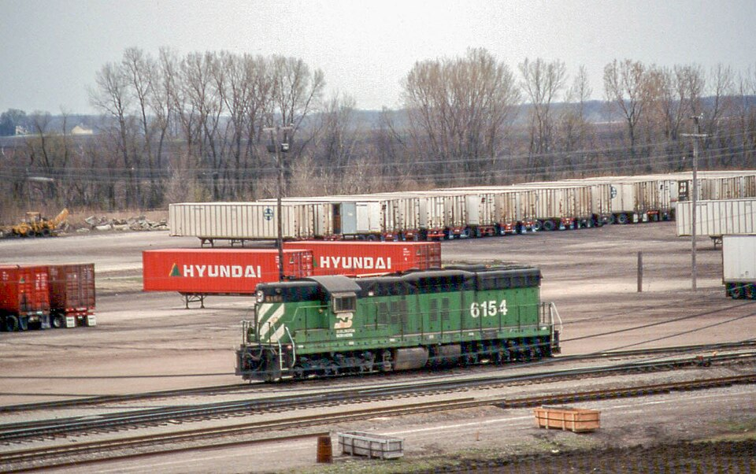

설립연도
1955년 (섬유회사로 출발, 1965년 버핏 경영 시작)

"투자의 귀재" 워런 버핏이 1965년 경영권을 잡아 키운 회사예요. 자동차보험 가이코 같은 보험 회사에서 들어오는 돈으로 철도(BNSF), 에너지, 제조·유통 회사를 통째로 사들이고, 애플·코카콜라 같은 회사 주식에도 투자해요. 2026년 1월 그레그 에이블이 CEO를 이어받았고 버핏은 이사회 의장으로 남았어요.
칸에 마우스를 올리거나 누르면 자세한 설명을 볼 수 있어요.

버크셔의 핵심이에요. 보험료를 먼저 받고 보험금은 나중에 주기 때문에, 그 사이에 쌓인 큰돈(플로트)을 투자에 쓸 수 있어요.
대표 예가이코, 제너럴 리, 버크셔 해서웨이 재보험

2010년 인수한 BNSF는 미국 서부·중부에 걸친 거대한 화물 철도예요. 곡물, 석탄, 컨테이너 등을 실어 날라요.
대표 예BNSF 철도
미국 여러 주에서 전기와 가스를 공급하는 회사들과 풍력·태양광 발전소를 운영해요.
대표 예버크셔 해서웨이 에너지
애플, 아메리칸 익스프레스, 코카콜라 같은 회사의 주식을 오래 들고 있어요. 이 밖에 데어리퀸, 듀라셀 등 다양한 회사를 통째로 가지고 있어요. 그래서 주가 변동에 따라 순이익이 크게 오르내려요.
대표 예애플·코카콜라 주식, 데어리퀸, 듀라셀
원화 금액은 1달러 = 1,334.9원(2026년 11월 27일 유럽중앙은행 기준환율)으로 환산한 대략적인 값이에요.
| 기간 | 매출 | 순이익 |
|---|
버크셔는 일반 회사처럼 영업이익을 따로 공시하지 않아서 매출과 순이익만 보여드려요. 순이익에는 가지고 있는 주식의 값 변화가 들어가서, 주식시장에 따라 크게 오르내려요.
사업마다 겨루는 상대가 달라요